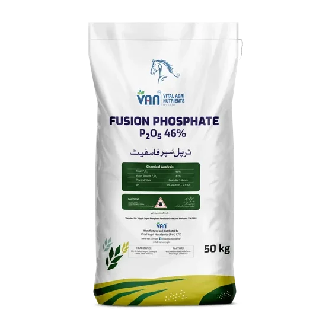

Our brands / Phosphorus / Fusion Phosphate

Fusion Phosphate
TSP. P₂O₅ 46%
Fusion Phosphate and Green Phosphate are both offered against the phosphorus line in every programme that names one of them. The plan's number of bags is the same either way; what goes on the field is not.
Same bag size, different bag. Fusion Phosphate is TSP at 46% P₂O₅. About 44% more phosphate per bag than Green Phosphate’s 6-32-0, and no nitrogen with it. Green Phosphate is the humic-coated acidic grade, built for alkaline ground. The plan’s number of bags does not change if you switch; what you put on the field does.
Calcareous soil, carbonate rising with pH. The condition the phosphate range is built against.
Punjab soil testing programme · 36 district workbooks · 770,160 valid samples · c. 2016–2018. The figure describes the soil. It is not a claim for the product.
Tell us the quantity and your district. We reply with price, availability and delivery. Every batch is tested in LAB 336, PNAC · ISO/IEC 17025:2017.
Specification
Programmes that use it
Fusion Phosphate does not appear in the wheat programme. The crop plans show which programmes use it. The crop plans →
What it is, what it does in the soil, where it fits in the season and what VAN will not claim for it.